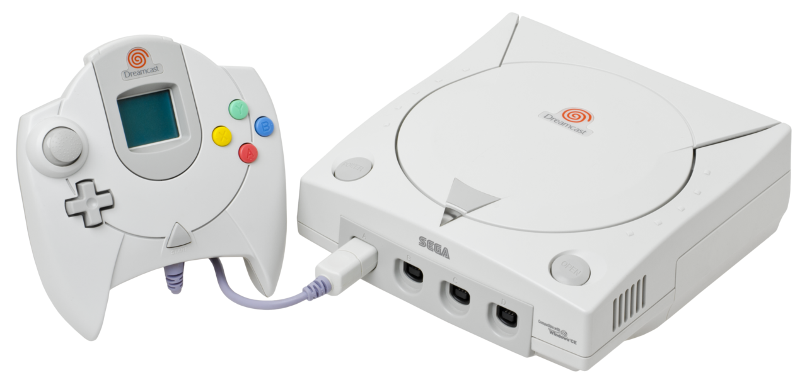
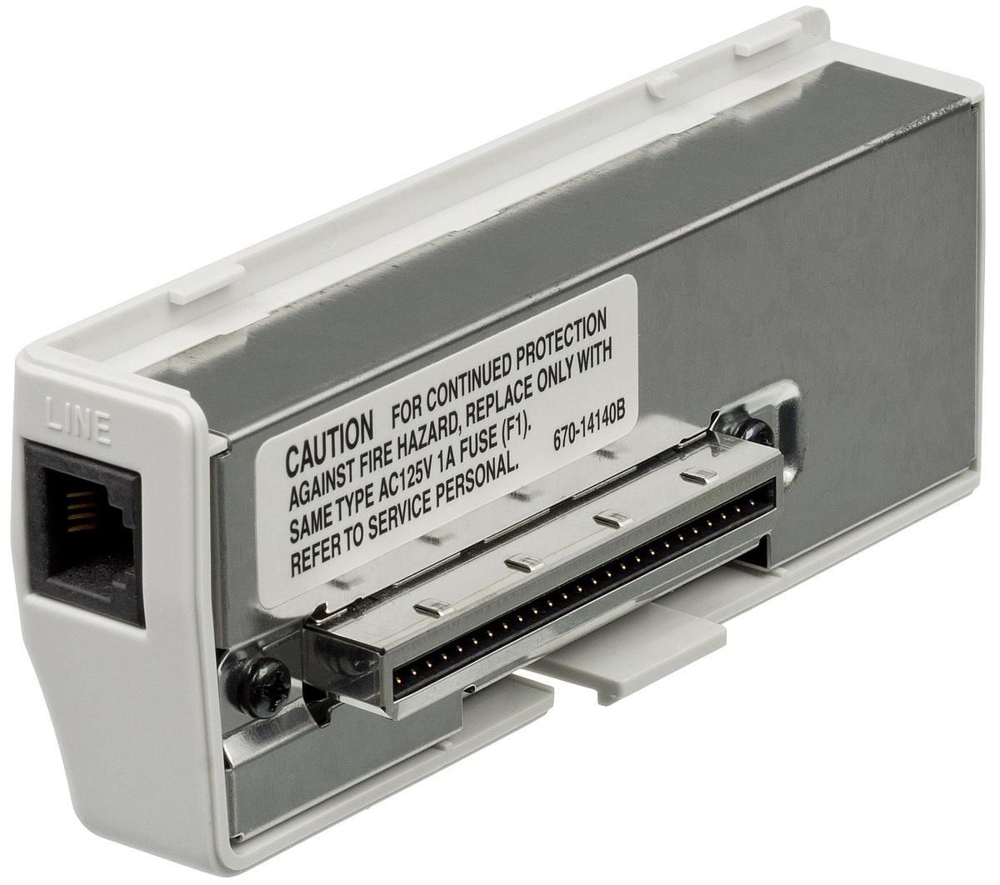
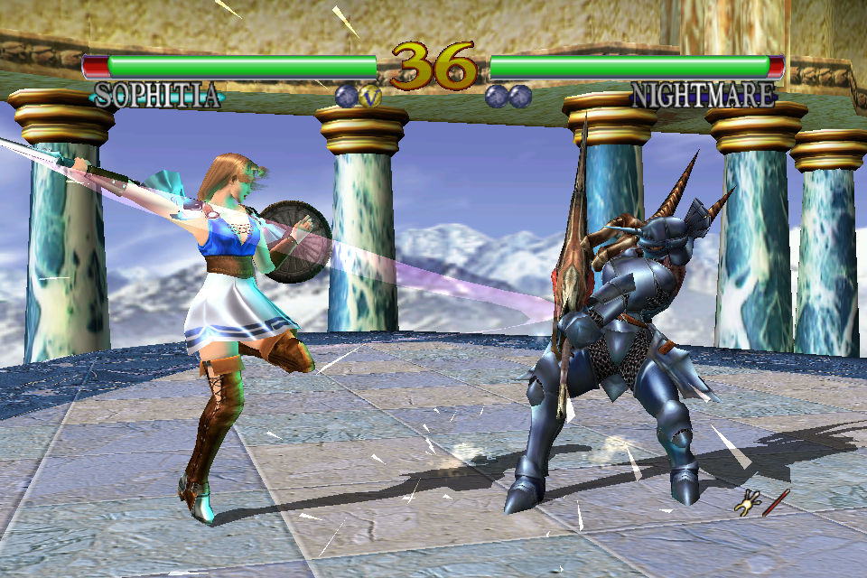
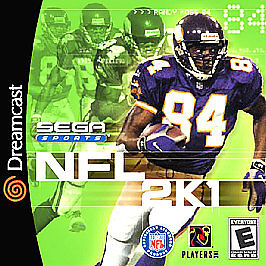

Retro Gamer Cave
Sega DreamCast
O fim de uma era
Empresa fabricante:Sega
Desenvolvido por:Tatsuo Yamamoto
Ano de lancamento:1998

O Dreamcast Foi o primeiro console da sexta geração, precedendo o PlayStation 2, o GameCube e o Xbox. foi o último console doméstico da Sega, marcando o fim dos 18 anos da empresa no mercado de consoles. O cenário na quinta geração era o seguinte: a Sony dominava com ampla margem com o revolucionário PlayStation. A Nintendo, com seu Nintendo 64, vinha logo atrás, com o Saturn da SEGA na lanterna da disputa.Era chegada a hora da SEGA colocar as cartas sobre a mesa e tentar retomar as rédeas do mercado de videogames para si. E então que em 27 de novembro de 1998 chega ao mercado japonês o Dreamcast. Trazendo uma linha inicial de jogos não muito expressiva, onde o destaque era a versão de Virtua Fighter 3

Outro ponto importante que os executivos da SEGA da América queriam implementar no novo console era a jogatina online, algo que estava ainda em seu início, mas que ganhava cada vez mais força e interesse dos gamers; Convencionou-se que o console viria de fábrica com um modem para possibilitar partidas online e acesso à internet.
O Dreamcast era um excelente console e quem viveu em seu tempo com certeza compartilha desse sentimento. Com design compacto e elegante, um controle que, apesar de seus defeitos, possuía grande apelo pelas novidades implementadas, como por exemplo a popularização dos botões-gatilho e o memory card com tela, e uma incrível capacidade de jogatina online em um tempo em que isso praticamente não existia nos consoles. Tudo isso faz com que o console da SEGA, o último fabricado pela icônica empresa, seja também um dos mais emblemáticos videogames da história.
TOP 3 JOGOS DO SEGA DREAMCAST
- SOUL CALIBOUR(1980):um jogo de luta com armas brancas, que impressionou pela qualidade gráfica, pelo sistema de combate fluido e pela variedade de personagens e modos de jogo. Até aqui os jogos 3D eram decentes mas Soul Calibur deu um salto visual enorme, comparando-se com a sua versão Arcade.Além do modo clássico ,O jogo tinha os modos de Team Battle e Survival que eram comuns quando se passava jogos de arcade para console, mas SC tinha também um Mission Mode onde se podia fazer missões com objetivos específicos e ganhar pontos para comprar skins,vídeos, arte e outros pequenos extras do jogo.

- TONY HAWK'S PRO SKATER II (1982):um jogo de skate que se tornou um fenômeno cultural, com uma trilha sonora memorável, uma jogabilidade viciante e um editor de pistas e personagens. O jogo se destaca pela sua jogabilidade precisa e responsiva, que exige habilidade e coordenação do jogador, mas também permite muita criatividade e improvisação. As manobras são fáceis de executar, mas difíceis de dominar, e podem ser combinadas de diversas formas, gerando pontuações altas e combos espetaculares.

- NFL 2K1(1981):um jogo de futebol americano que revolucionou o gênero, com gráficos realistas, uma inteligência artificial desafiadora e um modo online pioneiro. NFL 2K1 foi aclamado por sua simulação precisa e sua jogabilidade intuitiva. O jogo tem uma apresentação impecável, que simula uma transmissão de TV, com comentários, replays, estatísticas e entrevistas. Os gráficos são realistas e detalhados, com efeitos de clima, iluminação e sombra. Os jogadores têm proporções diferentes, movimentos variados e expressões faciais. O som é envolvente, com uma trilha sonora empolgante, efeitos sonoros de impacto e uma torcida vibrante.
